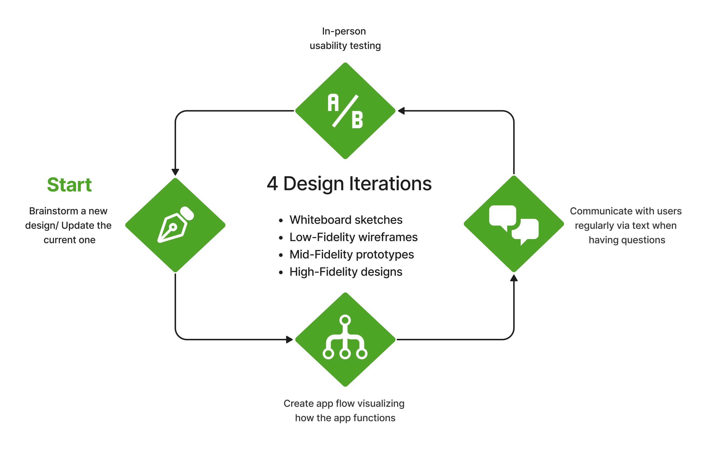

Sharing Excess Wholesale App
I redesigned the Wholesale mobile app of Sharing Excess - a nonprofit addressing the issue of food insecurity in the United States - to streamline their process of working with input and output data in the warehouse, which significantly shortened the process, minimized human errors, and increased workers' productivity.
Project
Internship
Timeline
July - September 2023
My role
UX Designer
UX Researcher
Team
Quinn - UX Designer
Shash - Developer
Victoria - Product Manager

CONTEXT
Collecting and Delivering food - What is complex about it?
Receiving and distributing around 30k pounds of food from 9AM to 11AM everyday, Food Sourcing Associates are some of the busiest employees at Sharing Excess. In this fast and chaotic process, the real frustrations lied in working with the data.


PROBLEM
The existing Tool Didn't Do What It was Supposed to Do
Sharing Excess app (or SE app) is the company's main workspace platform, and also the main tool that workers use to record data of the food collecting and distributing processes.
However, after conducting a Field Study and shadowing 3 Food Sourcing Associates through a typical workday in the warehouse, I concluded that SE app couldn't perform the most basic functions.
1. It lacks most of the important information
The Entry form had no fields to enter important numbers such as case count and case weight.
⇒ They put all these numbers into "Notes" field
⇒ Disorganized and confusing

2. It can't do the math for users
For example, to transfer the total weight to case count (i.e. the number of cases), workers have to manually calculate it then enter into the app.
⇒ Time-consuming while the process has to be quick
⇒ Stress, human error, data inaccuracy
3. It doesn't have reminders or alert messages
There are situations in which food is forgotten to be distributed and gets stuck in the SE warehouse. However, the app doesn't remind workers about it.
⇒ The food loses quality and isn't qualified to be distributed ⇒ Wasteful


⇒ How the app worked technically didn’t align with users’ work process
Getting frustrated with the app, workers in the warehouse created a Google Sheets document to record data effectively in real time. However, at the end of the day, they still had to transfer data from the spreadsheet to the app, which didn't shorten the process.
In an ideal world, Tate - one of the main Food Sourcing Associates - hoped to get rid of 1.5 mind-numbing hours of moving data between 2 platforms, and use the SE app right in the warehouse.
Problem Statement
The SE app is not an optimal all-in platform, therefore users have to utilize an external platform to do their work. This prolongs and overcomplicates the process, thus negatively affecting employees' work productivity and outcomes.
USER RESEARCH
Listen to the Users' honest Thoughts
Feeling the need to have a more in-depth conversation with the workers and understand their needs and goals, I set up a Focus Group and UX Workshop for all 3 workers to:
- List every problem with the work process and the app, and order them in terms of priority and urgency
- Compare the pros and cons of SE app and Google Sheets
- Brainstorm their ideal solutions


There were frustrations that I didn't see until I talked to the users: e.g. no standard naming convention for the process; so many unexpected scenarios that the app couldn't cover.
Working in an environment requiring speed and concentration, they don’t want to be perplexed by how the app works ⇒ something intuitive and self-explanatory even for beginners.
Their insights and suggestions helped me define the questions I need to answer and gave me a direction to move forward in the design.
"How Might We..."
How might we make the flow of SE app replicate the real-time process and implement advantageous features of Google Sheets into the app, in order to streamline the Food Sourcing process?

PROCESS
Overview of Design Iterations

PROCESS
Low-Fidelity Wireframes
I separated Entry and Allocation processes into 2 views that can be accessed individually, instead of having Allocation nested inside Entry as in the original app.
⇒ Workers can easily navigate the task they want to do

SOLUTION
Final Design: High-Fidelity Screens
1. Enter data in an organized and logical way
- Add fields for every important number to store data individually
- ⇒ No longer write every numbers in Notes field
- Create "Before Sorting" and "After Sorting" tabs in Entry form; tailor the design of each tab to replicate the real-life process
- ⇒ Separate different types of data
- ⇒ Avoid confusion and mistakes
2. Distribute multiple products to an organization effectively
- Original app: create one form for each type of product that an organization orders
- New app: add multiple types of products into a form for an organization
- ⇒ Group related data together ⇒ Easy to keep track
- ⇒ Shorten the process and save time
3. Be reminded to distribute all donated food
- Have a separate page for Remaining Produce to list out foods donated days ago but haven’t been distributed
- Display older foods in red
- ⇒ Ensure they are still in good condition and distributed ASAP
- ⇒ Minimize food waste and increase the company's impacts
4. Stop doing math manually
- Activate auto-calculation for related data
- Example: Case Count * Case Weight = Total Weight
- ⇒ Entering any 2 of these 3 numbers will have the other one calculated
- ⇒ Avoid human error and increase data accuracy
IMPACT
Workers can now do their work at ease
We tested the Alpha version of the app with the Food Sourcing Associates in the warehouse in real time for 3 consecutive days, then compared their work perfomance and productivity before and after using the new app. We are actively fixing some minor issues of the app for the official launch in October 2023.
1.5 hours ⇒ 0 hour
of transfering data between 2 platforms. Workers don't need Google Sheets anymore.
1-2 minutes ⇒ 30 seconds
of entering data for one Entry/Allocation form. Workers can confidently use the SE app in real time.
75%
reduction of human error and data inaccuracy. In-app calculation and Alert messages help workers avoid mistakes.
60%
reduction of food waste. Workers are reminded to distribute food in a timely manner.
REFLECTION
What I learned over the project
1. Put myself into users’ shoes
To solve complex problems of the app, I had to work closely with the users, and even build a relationship with them. User research is not only setting up an interview with people, but also “visiting” them and observing their frustrations in real life.
2. Evaluate my design decisions from multiple perspectives
Every time testing my designs with the workers, I also handed them off to stakeholders and developers. They would let me know if the design was codable or if it might cause any problem.
3. Take the initiative and Learn along the way
I was nervous to know that another intern and I would be the only designers of the company. I read more books, consulted other UX professionals, and self-studied to gain confidence. Thus I soon worked my way out and took control of the project.